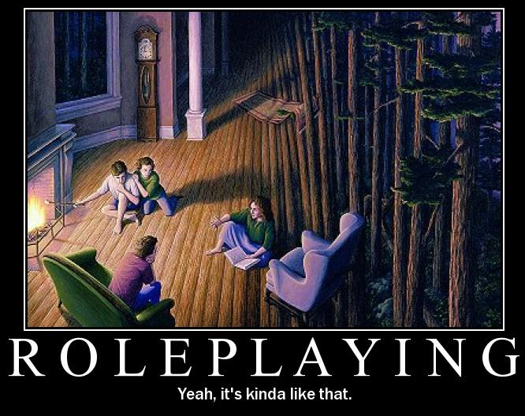

Oyunlar ve Oyuncular
Selam Prenses,
Oyunu ve oyuncuyu kutlama zamanı. Dört mart oyun severler tarafından kutlanan bir gün. Dünya Oyun Yöneticisi (Game Master – GM) günü. Sakın Dünya Oyuncu Günü ne zaman diye sorma, her gün oyun ve oyuncu günüdür. Ama özellikle rol yapma oyunlarında (Role Playing Games – RPG) birinin oyunu yönetmesi gerekir. İşte dört mart onların günü. Neden özellikle o gün dersen, İngilizcedeki bir kelime oyunu yüzünden. Dört mart İngilizcede March Forth diye söylenir, aynı yazılış ve okunuşla bu ifade aynı zamanda “İleri, Marş” olarak da anlaşılabilir. Ecnebiler pek seviyo bu kelime oyunu işini, işte bu da o tarz bir gün.
Rol yapma oyunları, pek çok kişinin alışkın olduğu rekabetçi oyun mantığının dışında şeyler. Yenmece yenilmece yok. Kazanmak için değil oyun oynamış olmak için oynuyoruz. Adı üstünde zaten, rol yapılıyor. Oynamayı seçtiğimiz karakterlerin başına bir şeyler geliyor, biz de bunları çözmeye çalışıyoruz. Karakterlerin başına gelen bu şeyleri kurgulayan, tabiri caizse oyunun senaryosunu yazan bir oyun yöneticisi olmak zorunda, her şeyi oyuncular ayarlarsa ne bir zorluk, ne bir gizem, ne de eğlence kalır. Oyun yöneticisi ise oyuncuların kararlarına, eylemlerine karışamaz. Havanın nasıl olduğundan, oyunda karşılaştığımız oyuncu olmayan karakterlerin davranışlarına, hareketlerimizin sonuçlarından etrafımızdaki alanın tasvirine kadar her şeyi o bilir. Bir de şansa bağlı işler var (omuz attığın kapıyı kırıp kıramadığın gibi), onlar için de zar atılıyor. Oyun kabaca bu üç unsurla yürür: GM, oyuncu, zar. İsteyen harita, figür vesaire ekler. Detayları uzatmayacağım prenses, ama ‘oyun’ deyip geçmemek lazım, ne dünyalar var.
Oyun dünyasının çocuklar için olduğunu zannedenler son derece yanılıyor prenses. Pek çoğumuz delikanlılıktan utangaçlığa, mesaiden zaman bulamamaktan kendisine hitap eden oyunlar olduğunu bilmemeye kadar bir sürü sebepten oyun oynamıyoruz. Biz dediğime bakma, kendi adıma oyun oynamadığım gün yok, empati olsun diye öyle yazdım. Aslında son yıllarda oyun kafelerde popüler olan monopol, tabu, scrabble gibi kutu oyunlarıyla ortam biraz canlandı. Ama o kutu oyun dünyasının da çok küçük bir kısmından haberimiz var. Meraklısı buradan kutu oyun dünyasının sonsuzluğuna dalabilir.
Biraz da tabii bilgisayar dünyasındaki oyunlardan bahsetmek gerek. İki düz çizgi (raket) arasında bir kareyi (top) sektirdiğimiz at büyüklüğündeki piksellerden oluşmuş o amatör tenis oyunundan beri oyun dünyasının nerelere geldiğini bilmeyen kalmadı. Facebook hesabı olmayana manyak gözüyle bakıldığı gibi etrafımızda yapılan World of Warcraft ya da FarmVille sohbetlerinden tamamen kaçmış olmamız mümkün değil. Hatta bir ucundan bulaşmayan da yok gibi. Sektörün büyüklüğü ise zaten inanılmaz boyutlarda ve hızla büyümeye de devam ediyor.
Bazı rakamlar vererek bilgisayar oyun dünyasının büyüklüğünden bahsedeyim. FarmVille’in üreticisi Zynga, Aralık 2011’de hisselerini halka arz ettiğinde 1 milyar dolar nakit elde etti ve şirket değerini 10 milyar dolar seviyelerine yaklaştırdı. Sadece FarmVille’in aktif günlük kullanıcı sayısı 20 milyon civarında. Ve burada küçük bir flash oyunundan bahsediyoruz. Yani internet tarayıcınıza artık neredeyse standart hale gelen ‘flash’ dışında hiçbir eklenti dahi indirmeden, oyunu satın almadan ya da herhangi bir program kurulumu gerçekleştirmeden, ilgili internet sayfasından tarayıcınızdan oynayabildiğiniz basit grafikleri olan bir oyun. Ama ‘sosyal’ bir oyun ve işte oradan vuruyor.
Tamamen ücretsiz oynanabilen internet oyunlarının şu anda en büyük ve en popülerlerinden biri de Riot Games’in başyapıtı League of Legends. Bu oyun aslında oyun dünyasının önemli devlerinden Blizzard Entertainment’ın (ki Starcraft, Warcraft ve Diablo diye üç DEV oyun üretmiş çok başarılı bir firmadır) Warcraft 3 oyunu için yapılmış bir harita üzerinden ortaya çıkan Defense of the Ancients (DoTA) adlı oyunun bir türevi. Dııdısının dııdısı dememiz gerekir aslında, ama boynuzun kulağı geçtiği durumların ağababalarından biriyle karşı karşıyayız. 2009’da çıkan bu oyun, 2000 yılından beri düzenlenen World Cyber Games (bilgisayar oyunu olimpiyatları diyebiliriz) bünyesinde 2010 ve 2011’de resmi 12 oyun arasında kendine yer bulmakla yetinmedi. Profesyonel takımların katılımı ve akıl uçurtucu (en azı 50 bin, en çoğu bir milyon dolar) para ödülleriyle –ki sponsorların düzenlediği geniş katılımlı ünlü turnuvalar hariç – şu anda 3 kıtada 3 ayrı lig şeklinde oynanmakta olan kendi sezonunun sonunda Ekim ayında dünya şampiyonası düzenlenecek. İnternetten canlı yayınlanan maçları önem/popülerlik seviyesine göre 10 ila 200 bin kişi izliyor.
Güney Kore’de profesyonel bilgisayar oyunculuğu son derece saygın bir ‘meslek’. Rock yıldızları gibi sokakta rahat yürüyemeyen ünlü oyuncular, eğitim masraflarını (pek çoğu 18 yaşın altında tabii ki) üstlenen sponsorlarından elde ettikleri gelirle genelde anne babalarından daha çok kazanıyorlar. Sadece Starcraft oyunu maçlarını yayınlayan iki kablolu kanal var ve inan prenses, bunlar halka açık alanlarda (havaalanı vs.) vakit geçirten televizyon yayınları için sıkça tercih edilen kanallar.
Bunlar basit örnekler prenses. Konsollar için üretilen (tabii aslında pek çok oyunun birden çok platform için sürümleri olsa da biri ‘asıl’ mecra oluyor) God of War, Assasin’s Creed gibi yarışma/rekabet üzerine değil bireysel yetenek üzerine kurulu macera oyunları, Mario, Legend of Zelda gibi uzun geçmişi ve çok sayıda sürümü olan seri oyunlar (Süper Mario tüm dünyanın en çok satan oyunudur), isim isim saymakla bitiremeyeceğimiz dövüş, araba yarışı ve futbol oyunları, bulmaca çözme oyunları… Bilgisayar oyunları dünyasının sonu yok. Ama şu videoda:
profesyonel oyuncuların (Daigo vs Justin), bizim atari salonlarından tanıdığımız meşhur Street Fighter oyunu 2004 dünya şampiyonası final maçında seyirciyi nasıl ayaklandırdığını görebilirsiniz. Videonun sonunda tek vuruşluk canıyla 10’dan fazla atak kombosundan oluşan saldırın her bir vuruşunu ayrı ayrı bloklayıp üzerine maçı kazanan Daigo’nun bu yaptığı, 1999 Şampiyonlar Ligi finalinde son iki dakikada iki gol atıp kupayı alan Manchester United’ınkinden daha az çarpıcı bir başarı değil. Bu profesyonel oyuncuların performansı APM (Actions per Minute – Dakika Başına Eylem) ile ölçülüyor. Her bir tuşa basma ya da fareye tıklama (artık oyunda ne yapılıyorsa o işte) 1 eylem sayılır ve bahsettiğim profesyoneller bu rakamı ortalama 300, yoğun savaş anlarında 400 civarına çekebilmekte.
Her oyun başka bir yeteneğimizi geliştirir, hepsi de faydalıdır. Neticede satranç ve go da oyun, ama bir çok insan başına oturmaya bile çekinecek kadar zor buluyor bu oyunları. Herşey refleks ve gençlik değil, Kasparov Deep Blue’ya yenildiğinde 34 yaşındaydı, profesyonel oyunlardan çekildiğini açıkladığında da 42. Sorun çözmek için kağıt-taş-makas oynamak başka, aynı oyunu psikolojik bir açıdan ele alan İngiliz mentalist Derren Brown’un yaptığı gibi ‘asla kaybetmeden’ oynamak başka. Geç değil, vakit de var, hadi bişeyler oynayalım prenses.


{kind=link}
{kind=link}
E-sports bir nedir? http://sihirdarvadisi.web.tv/video/svpccq3rfie